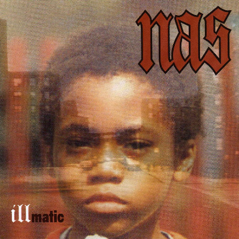
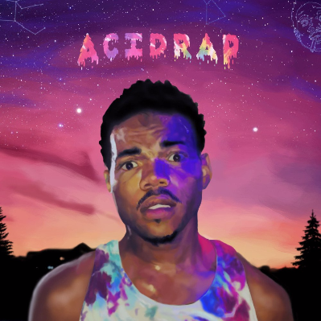
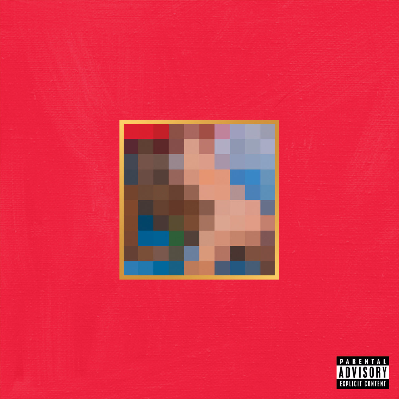
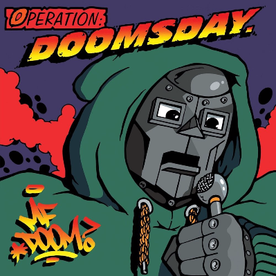
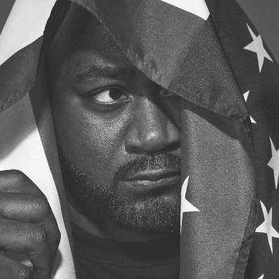
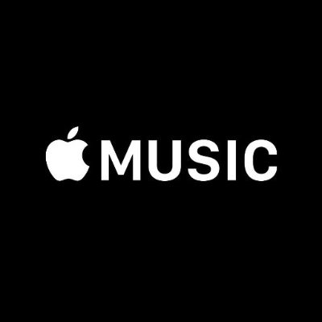

Album of the Week

Illmatic by Nas
Nas maintains an unparalleled level of intensity from the bracing opener "N.Y. State of Mind" right to the final bars of "It Ain't Hard To Tell.” Nas' flow is equal parts Rakim-style virtuosity and gritty Kool G Rap-derived storytelling prowess. From the ruthless philosophizing of "Life's a Bitch" to the nostalgic sorrow of "Memory Lane" Nas paints a stirringly vivid portrait of life in the Queensbridge projects that other MCs would be imitating for years to come. An indisputable triumph, Illmatic is a must-hear for anyone with even a passing interest in contemporary music.
Recommend Albums and Their Respective Artists

Madvillainy by Madvillain
With razor-sharp verbiage and wildly imaginative beats, this is a classic combination of two hip-hop super-villains in their prime. Metal-faced rap linguist MF Doom spins crime narratives over bopping bass strums on “Meat Grinder,” and cheerfully harmonizes out of tune over orchestral jazz on “Rainbows.” Dusty fingered producer Madlib loops wonders out of obscure vinyl records, whether it’s the melodic drone of “Accordion” or the skipping guitars and koan-like tone of “Shadows of Tomorrow.”

Acidrap by Chance The Rapper
Acid Rap gave Chance nation-wide recognition. It was the number one spot of Rolling Stone’s 10 Best Mixtapes of 2013 and it even landed at the No. 63 on Billboard’s Top R&B/Hip-Hop Albums chart after being sold by unauthorized retailers. But social commentary is perhaps Acid Rap’s most distinctive feature. Chance is reminded of watching his friend die in every empty hallway, compares Chicago’s gang violence to Hurricane Katrina, and longs for the days when he could peacefully watch cartoons.

My Beautiful Dark Twisted Fantasy by Kanye West
The appropriately titled My Beautiful Dark Twisted Fantasy comes from a heavily scrutinized time in Kanye West’s career. After a series of canceled tour dates and memorable award show appearances, West went into a self-imposed exile from all media and created a masterful artistic response. Lead singles “Power” and “All of the Lights” were reported to have five thousand hours of work put into them, each projecting larger-than-life sounds with intricacy that can be heard down to each snare hit. Even with high-profile contributors Nicki Minaj (“Monster”), Elton John (“All of the Lights”), JAY Z (“So Appalled”, “Monster”), RZA (“Dark Fantasy”, “So Appalled”), and Bon Iver (“Lost in the World”), Kanye is clearly the orchestrator of this extravagant musical exhibition.
Illmatic by Nas
Nas maintains an unparalleled level of intensity from the bracing opener "N.Y. State of Mind" right to the final bars of "It Ain't Hard To Tell.” Nas' flow is equal parts Rakim-style virtuosity and gritty Kool G Rap-derived storytelling prowess. From the ruthless philosophizing of "Life's a Bitch" to the nostalgic sorrow of "Memory Lane" Nas paints a stirringly vivid portrait of life in the Queensbridge projects that other MCs would be imitating for years to come. An indisputable triumph, Illmatic is a must-hear for anyone with even a passing interest in contemporary music.

Operation: Doomsday by MF DOOM
Simultaneously hailed as an underground classic and cast aside as poorly produced backpack rap, Operation: Doomsday inaugurated the reign of MF Doom in underground rap from the early to mid-2000s. The pretext for the album is very similar to that of Marvel Comics supervillain Dr. Doom; after MF Doom, then known as Zevlove X, had been devastated by the death of his brother and K.M.D. accomplice, DJ Sub-Roc in the early '90s, Elektra dropped his group and stopped the release of its second album, Black Bastards, due to its political message and, more specifically, its cover art. Doom was left scarred with a lingering pain that didn't manifest until the late '90s, as hip-hop's only masked supervillain on Bobbito Garcia's Fondle 'Em Records. Carrying the weight of the past on his shoulders, Doom opens and closes Operation: Doomsday with frank and sincere lyrics. In between, however, many of the villain's rhymes are rather hard and piercing. On his subsequent material, he developed a more steady and refined delivery, but on this debut, Doom was at his rawest and, lyrically, most dexterous. The out-of-left-field edge of Doom's production — which features '80s soul and smooth jazz mixed with classic drum breaks — is indeed abstract at times, but his off-kilter rhymes are palatable and absent any pretentiousness. In fact, the album arguably contains some of the freshest rhymes one might have heard around the time of its release. There are more than enough obscure but fun references (i.e. "quick to whip up a script like Rod Serling" on "Go with the Flow," or "MCs, ya style needs Velamints" on "Dead Bent") and quotable jewels from the "on-the-mike Rain Man" to feed on. Nevertheless, one would be hard-pressed to overlook the low-budget mixing that mars some of the LP's presentation. For hardcore Doom fans, the recorded-in-the-basement quality is appealing and representative of his persona as the underdog who "came to destroy rap." In contrast, given his contributions to hip-hop during the 2000s, the masked villain offers this explanation on "Doomsday": "Definition: supervillain/A killer who loves children/One who is well-skilled in destruction as well as buildin'." Even though this album is certainly not for everyone, you can easily respect where the man is coming from. [In 2011, MF Doom’s own label Metal Face Records reissued the album in an Expanded Edition. A bonus disc featuring alternate versions, B-sides, and instrumentals was added along with new cover artwork from Jason Jagel.]

Sour Soul by BADBADNOTGOOD and Ghostface Killah
Ghostface Killah's 2015 collaboration with Toronto jazz/hip-hop trio BadBadNotGood seems to be turning his 2010s work into a themed trilogy, as his 2013 LP, Twelve Reasons to Die, found the Wu-Tang rapper partnering with Adrian Younge for a '70s slasher-themed release, while 2014's 36 Seasons was action movie-inspired and recorded with Brooklyn band the Revelations. Sour Soul is more abstract, as the title track tells the tale of a character that's a cross between Johnny Mnemonic and a pimp, while the music touches upon a wide range of soundtrack styles from the '60s and '70s, including the soft-porny "Stark's Reality," where vibes and strings float about the speakers. "Tone's Rap" is either semi-drunk funk or the sound of a warped Fat Albert record, and to their credit, BadBadNotGood are more soulful than usual, laying down grooves that could complement any adventurous MC. Ghostface certainly lives up to the task, putting in chuckle-worthy punch lines (take "Sour Soul"'s "they can't feed me food for thought") which carry more weight as the LP evolves into something akin to Terry Gilliam's film Brazil on wax. Out of all of Ghostface's recent albums, this one stuns with its features, as MF Doom ("Ray Gun"), Elzhi ("Gunshowers"), and Danny Brown ("Six Degrees") all spit and kick with left-field excellence, but the run-time barely pushes this one past EP territory, and with two better examples dropped in recent memory, Ghostface art excursion number three doesn't come with that surprise punch. In James Bond terms, Sour Soul is the almost addendum-ish Quantum of Solace as it offers adventurous fans the same opportunities for a quick fix while sacrificing a bit of weight. In Toronto jazz terms, it's verygoodgoodnotbad.
Music Services

Apple Music
Listen to all the music you want, anytime. Plus get curated radio & playlists, recommendations, exclusives, and more. Join Apple Music and try it free for three months.

Spotify Music
Spotify is now free on mobile and tablet. Listen to the right music, wherever you are. With Spotify, you have access to a world of music. You can listen to artists and albums, or create your own playlist of your favorite songs. Want to discover new music? Choose a ready-made playlist that suits your mood or get personalized recommendations.
Soundcloud
SoundCloud is the world's largest music and audio streaming platform – 150 million tracks and growing. With a buzzing community of artists and musicians constantly uploading new music, SoundCloud is where you can find the next big artists alongside chart-topping albums, live sets, and mixes for every occasion.
Google Play
Google Play Music provides free, ad-supported radio for what you’re doing, how you’re feeling, or what you want to hear. Instantly start radio stations based on songs, artists, or albums, or browse by genre, mood, activity, decade, and more. Bring your own music collection with you by uploading 50,000 of your own songs; then listen to them across Android, iOS, and the web, for free.

Tidal
Tidal is the world’s first music service with High Fidelity sound quality, High Definition music videos and Curated Editorial by music journalists, artists and experts, making for a simply superior experience. Try it out and see for yourself.

YouTube Music
YouTube Music lets you watch and listen to a nearly endless catalog in an app designed for music discovery. Enjoy music for free with ads, or get YouTube Red.